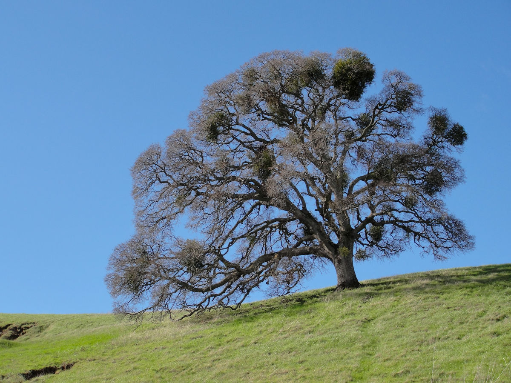
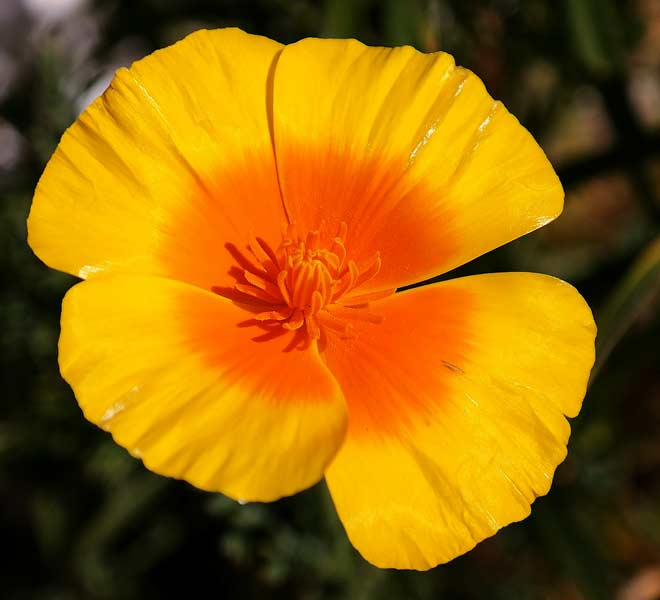

Valley Oak
Quercus lobata
The sturdy trunk of the valley oak may exceed three meters (10 feet) in diameter and its stature may surpass 30 meters (100 feet) in height. The "Fetzer Oak", in Covelo, California, is the tallest known North American oak, at 153 feet (47 m).[7][8]
The branches have an irregular, spreading and arching appearance that produce a profound leafless silhouette in the clear winter sky. During Autumn leaves turn a yellow to light orange color but become brown during mid to late fall. In advancing age the branches assume a drooping characteristic. Its pewter-colored rippled bark adds to the attractive aesthetic of this species.[9]
Box Elder
Acer negundo
Indicative of its familiarity to many people over a large geographic range, A. negundo has numerous common names. The names "box elder" and "boxelder maple" are based upon the similarity of its whitish wood to that of boxwood and the similarity of its pinnately compound leaves to those of some species of elder.[4] This is the only North American maple with compound leaves, though several Asian species also have them.[5]
California Sycamore
Platanus racemosa
This large tree grows to 35 metres (110 ft) in height with a trunk diameter of up to one meter (three feet). A specimen on the campus of Stanford University has a trunk girth (circumference) of 10.5 metres (34.4 ft).[1] The trunk generally divides into two or more large trunks splitting into many branches. The bark is an attractive patchwork of white, tawny beige, pinkish gray, and pale brown, with older bark becoming darker and peeling away. Platanus racemosa is the dominant species in the globally and state endangered sycamore-alluvial woodland habitat.

California Poppy
Eschscholzia californica
It is a perennial or annual plant growing to 5–60 in (13–152 cm) tall with alternately branching glaucous blue-green foliage. The leaves are alternately divided into round, lobed segments. The flowers are solitary on long stems, silky-textured, with four petals, each petal 2 to 6 cm (0.79 to 2.36 in) long and broad; flower color ranges through yellow, orange and red [2] (with some pinks [3]), with flowering from February to September in the northern hemisphere (spring, summer, fall). The petals close at night (or in cold, windy weather) and open again the following morning, although they may remain closed in cloudy weather.[4] The fruit is a slender, dehiscent capsule 3 to 9 cm (1.2 to 3.5 in) long, which splits in two to release numerous small black or dark brown seeds. It survives mild winters in its native range, dying completely in colder climates.
Purple Owl's Clover
Castilleja exserta
The Castilleja exserta plant is an annual about 1 foot (0.30 m) tall with a hairy stem covered in thready leaves. Like other related Castilleja plants, this is a hemiparasite which derives some of its nutrients directly from the roots of other plants by injecting them with haustoria. This is the reason for its small, reduced leaves.
Although this species is variable in appearance and easily hybridizes with other Castilleja species, it generally bears a brightly colored inflorescence of shaggy pink-purple or lavender flowers. The thin, erect bracts are usually tipped with the same color, giving the inflorescence the appearance of a paintbrush.